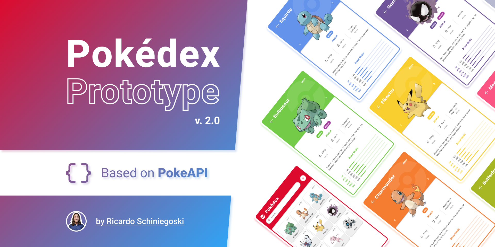

Projets

Voir le projet HTML/CSS

Voir la construction en cours (React Native/Typescript)

Bientôt disponible (JavaScript)
Formations
Depuis mai 2025 : autoformation développement web (OpenClassroom, mentoring par un développeur senior (10+)
Master Psychologie Sociale, du Travail et des Organisations, Université de Caen Normandie 2015
DEUG Arts du Spectacle - Cinéma (2015)
Mes autres expériences
Psychologue du Travail, CEP, Coordinatrice (Manager)
Catalys Conseil et ACCA (Alixio Mobilité) - 2017-2024
- Accompagnement individuel et collectif (bilan de compétences, création d’entreprise, reconversion)
- Coordination d’équipes : régulations, pilotage, reporting, animation de réseau
- Management opérationnel & formation interne
Responsable Service eCommerce
Intermarché - 2016-2017
- Gestion d’équipe,
- Organisation des plannings
- Suivi des stocks en ligne via outils back-office
Divers Postes dans l’enseignement, la recherche et la coordination de projets
- Animation de formations (gestion de conflits, communication)
- Recherches universitaires en psychologie sociale et cognitive interculturelle
- Organisation d’événements professionnels (forums, projets collectifs)